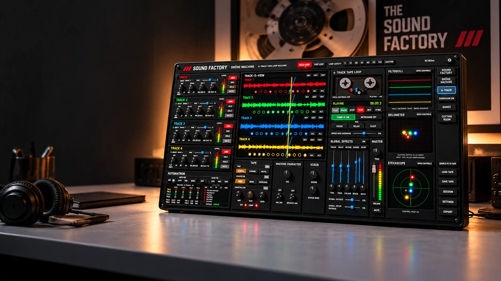

DRONE MACHINE
In development4-track tape-loop instrument

Capture · Degrade · Transform · Collide · Discover
From Grimiss Ambient, home of ambient music for Focus • Relax • Sleep: create your own evolving soundscapes with the character of real tape.
4-track tape-loop instrument
Edit, arrange, refine
Resample and reimagine
Generative ambient textures
Saturation, hiss, wow and flutter. Explore the imperfections that give tape its character.
Loop, layer, mangle and transform. From simple loops to evolving soundscapes.
Tremolo, delay, reverb, phaser and width. Shape your sound as you play.
Three responsive scopes. See your sound move.
The first instrument
A four-track tape-loop instrument at the heart of The Sound Factory. Capture an idea, build layers and let them evolve into something unexpected.
Inspired by physical tape and hands-on studio equipment, it brings recording, sound shaping and performance together in one place. FRS means Focus • Relax • Sleep: three possible uses of the same ambient music. Grimiss Ambient makes soundscapes for studying, coding, late-night coding, unwinding and bedtime. The Sound Factory grows from that same idea: give a simple sound space to develop, then make it your own.
You might be an ambient musician, a curious beginner, or a listener ready to experiment with loops and textures. Start with a small idea and explore where it takes you. If you would rather listen first, visit the Listening Room.
The Sound Factory is the environment. Drone Machine is its first instrument, with more machines planned.
From Grimiss Ambient
The Sound Factory is currently in development for Windows and macOS. Release details and pricing will be announced when it is ready.
FOLLOW GRIMISS AMBIENT ON YOUTUBE ↗